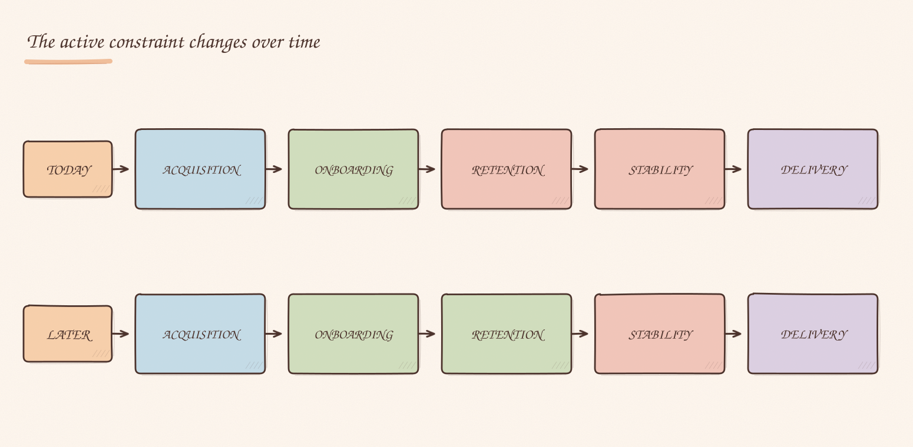
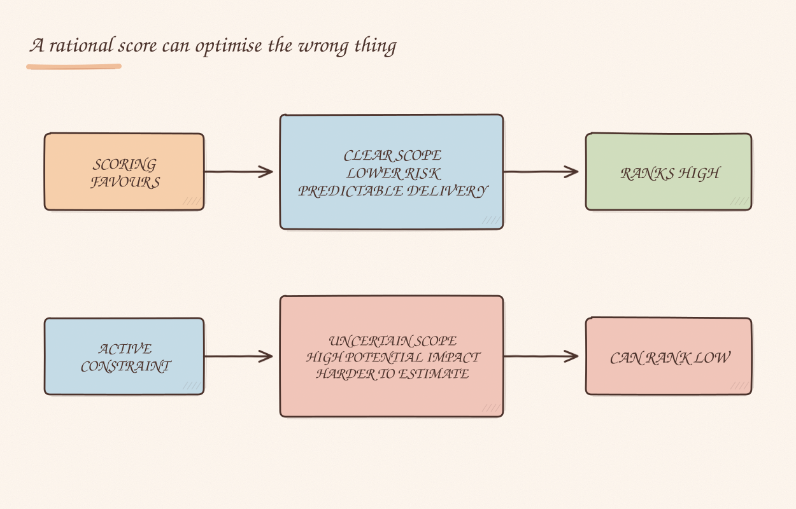

I used to think prioritization was about finding the best idea. In practice, most teams have too many good ideas and too little capacity to pursue them.
Most of that work is valuable. The hard part is deciding what matters now.
I started thinking about prioritization differently once I treated it as constraint management. Every organization has something limiting progress.
The job is to identify that constraint and stay focused on it long enough to make a difference. I have seen teams spend months improving parts of a system that were already working reasonably well while ignoring what held the business back. I have made that mistake myself.

At Decentraland we constantly had more opportunities than capacity.
All of those things mattered. The decision was which one limited us at that moment.
A few years ago, we experimented with a more structured approach to prioritization.
We collected initiatives from across the organization and scored them against a set of criteria: strategic alignment, expected impact, effort, risk, dependencies and team capacity.
On paper, it worked well. Everyone understood the process, the scoring was transparent and the decisions felt objective. It also made discussions less emotional and more evidence-based.
The weakness appeared over time: the framework was good at telling us what fit within available capacity, but much less effective at telling us what mattered most.
Projects with a clear scope, lower risk and predictable delivery tended to score well.
Initiatives tackling fundamental business problems often carried more uncertainty. They were harder to estimate, harder to shape and harder to fit neatly into a planning cycle.
As a result, the framework sometimes pushed us toward the most achievable work rather than the most impactful work.
The spreadsheet, scores and roadmap all looked rational while the most important problem sometimes remained untouched.

I saw a similar tension when using Shape Up.
I still value several parts of the methodology:
Like every framework, it has trade-offs. The conversation can shift toward shaping work into something deliverable before asking whether the work addresses the biggest constraint. Teams then become efficient at completing projects and closing cycles while the bottleneck stays in place.
Looking back, I think we sometimes spent too much time asking:
"Can we fit this into the next cycle?"
and not enough time asking:
"If we solve this, what actually changes for our users or the business?"
One example that stuck with me was support and bug management.
At one point we shifted some capacity away from support-related work and toward feature delivery and events.
In isolation, the choice seemed reasonable. Features and events mattered, and nothing looked obviously wrong.
A few weeks later, the bug backlog started growing rapidly.
The product had not suddenly become worse, nor had the team become less capable. We had stopped investing in the constraint, and the system behaved as expected.
Prioritization decisions do not disappear when we leave them implicit. If we do not choose where capacity goes, the feedback arrives later, when changing direction costs more.
The priority also changes as the system changes.
A year ago, performance might have been the biggest problem. Six months later it might be creator adoption. A few months after that it might be operational scalability.
That is why I am skeptical of fixed roadmaps that treat priorities as static. The highest-value work is often the work that removes today's biggest constraint.
When I look at a proposal now, I rarely start with "Is this a good idea?" Instead I ask:
Those questions lead to better conversations because they expose what the organization is optimizing for. The strongest leaders I have worked with were not necessarily better at generating ideas; they were better at identifying where the organization was stuck and what had to move first.
I no longer treat prioritization as a ranking exercise or a battle between projects.
Prioritization is the ongoing process of identifying the most important constraint and helping the organization move through it.